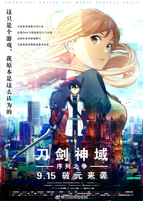

“这虽然是游戏，但可不是闹着玩的。”——“刀剑神域（Sword Art Online）”设计者茅场晶彦。
《刀剑神域：序列之争》终极海报发布！经典人气角色桐人、亚丝娜热血回归，开挂迎敌。9月15日，与《刀剑神域：序列之争》相约大银幕，一睹经典日漫风采！
战斗！伙伴！勇气！魄力！
这才是入宅神作《刀剑神域》包含的真正奥义。
刀剑神域：序列之争》战斗场面高能大放送，告诉你什么是最燃最热血！
《刀剑神域》SAO篇故事背景设定在2022年，讲述了一个发生在网络角色扮演游戏“刀剑神域”（sword art online，简称SAO）中的奇妙故事。SAO是一个可以容纳一万一千名游戏者的大型网络游戏，参加了游戏的主人公桐人得知了“在游戏中死去的人在现实中也会死去”的惊人事实。而想从游戏中逃脱，唯一办法就是打倒位于艾恩葛朗特顶楼第100层的头目。于是，桐人投身到了看不见尽头的游戏战斗之中。
ALO篇桐人从禁忌的死亡战斗MMO《SwordArtOnline刀剑神域》回到现实世界后，立刻前去寻找游戏时的伙伴——同时也是心仪对象的亚丝娜。但结城明日奈（亚丝娜）却还没从那个噩梦般的游戏里归来。桐人也因此而陷入困惑与绝望当中。他唯一的线索，是亚丝娜以“妖精”模样伫立在鸟笼里的奇异影像档案。亚丝娜似乎是被困在一款高性能的VRMMO游戏《ALtheimOnline》里面。 桐人为了解救亚丝娜，一头闯入这个有着无数妖精飞翔交错的“ALO”世界……在网络上人气超高的“妖精之舞”篇，正式展开！
主要人物介绍：
声优：松冈祯丞
[湾]宋昱璁[港]李致林
年龄：14-16（SAO经历2年）
武器：黑剑·阐释者、白剑·逐暗者（SAO）；圣剑·Excalibur（ALO）；
称号：黑衣剑士、二刀流
名副其实的重度网络游戏玩家，拥有超群的反射神经和洞察力。因为完全潜行正式版的SAO而被卷入死亡游戏,并以此为开端，牵扯进各种的虚拟世界事件。
出生没多久父母就因车祸去世，和人虽然也受了重伤但保住了性命，之后被桐谷家（母亲妹夫的家庭）收为养子。6岁就会自己组电脑，10岁时就发现自己的电子户口被修改过并发觉自己的身世，令养父母十分惊讶。五官看起来像少女一样，态度却非常冷淡，给人一种捉摸不定的印象。 因为在封测时期掌握了很多SAO的情报，所以等级提升速度很快，被称为“封弊者”，在攻略组中是数一数二的强者。
声优：户松遥
[台]丘梅君[港]柚子蜜
年龄：15-17（SAO经历2年）
武器：细剑·闪烁之光（SAO）；细剑、双手用法杖·世界树之杖（ALO）；
称号：闪光、狂暴补师
SAO系统下拥有排名前五名美貌的美女玩家，实力之强可以担任最强公会「血盟骑士团」的副团长，在SAO中几乎是无人不晓的名人。
父亲是大型电子用品制造商“RECT”的原CEO，母亲是某大学中的教授。因家庭因素，从小就接受精英式的培育，不论是自己还是兄长都被家人期望着将来有所成就，不断地作为亲戚间互相竞争与比较的对象，基于这个原因，在好奇心的驱使之下借用了自己哥哥带回来的NERvGear进入SAO，也因此被卷入了这场死亡游戏之中。
SAO被完全攻略后并未顺利登出，是因为须乡伸之的阴谋被困在ALO中，后由桐人救出，回到现实世界后两人成为恋人。
- 动画
-
《刀剑神域》
刀剑神域动画第一期，全25话，小说第1-4卷的动画化，已完结。
《刀剑神域Extra Edition》
年末特番，2013年12月31日放送，小说4-5卷之间的故事，原创剧情，时长约2个小时。
《刀剑神域Ⅱ》
刀剑神域动画第二期，全24话，小说第5-7卷的动画化，已完结。
《刀剑神域：序列之争》
剧场版，已经在2017年2月18日在全日本放送，并已确定会在中国大陆放送！小说第8-9卷之间的故事，为川原砾原创剧情！ - 漫画
- 《刀剑神域（ソードアート・オンライン）》
作者：中村贮子
出版社：ASCII Media Works
于“电击文库MAGAZINE”2010年9月号到2012年5月号间连载。